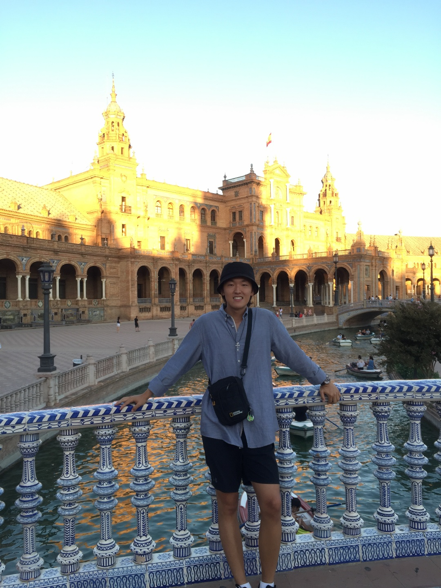
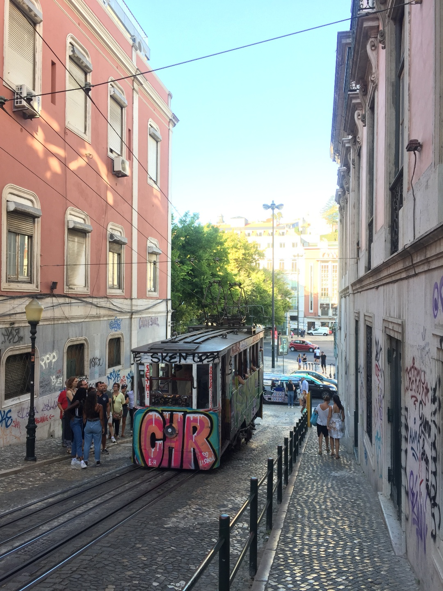

Wooseok's Travel Diary - Western Europe (ESP, PRT, GBR)
Spain
2019. 8. 1 ~ 8 - 바르셀로나
바르셀로나(스페인어: Barcelona, 문화어: 바르쎌로나)는 스페인에서 두 번째로 큰 도시로,
스페인 동부 지중해 연안 지역부터 프랑스 남쪽 피레네 산맥과 접경지역을 아우르는 카탈루냐 지방의 중심 도시이다.
인구는 1,620,343명(2018년)이고 면적은 101.3 km²이다. 도시의 명칭은 고대 페니키아어인
'바르케노(Barkeno)'에서 유래하였다(또는 B.C. 3세기경 스페인 식민지를 개척한 카르타고의 장군
하밀카르 바르카(한니발 바르카의 아버지) 가문의 성에서 유래했다는 의견도 있다). 1992년 하계 올림픽이
바르셀로나에서 개최되었다. 화가 파블로 피카소, 호안 미로와 건축가 안토니오 가우디 등 많은 예술가를 배출한 도시로 유명하다.
2019. 8. 8 ~ 14 - 마드리드
마드리드(스페인어: Madrid)는 스페인의 수도로, 나라의 중앙부에 있다. 인구는 약 300만 명이다.
마드리드는 만사나레스(스페인어: Manzanares)강을 끼고 있으며 스페인의 중심에 위치한다.
마드리드가 쏟아내는 경제적 효과로 인해 주변 도시들이 크게 영향을 받으며 따라서 마드리드는 이베리아 반도의 경제 중심으로 여겨진다.
또한 스페인 회사의 절대 다수가 이곳에 본사를 두고 있으며 세계 100대 기업 안에 드는 3개의 기업(Telefónica,
Repsol-YPF, Endesa)도 이곳에 본사를 두고 있다. 스페인의 수도로서 정부 청사가 있으며
스페인 왕궁이 있을 뿐 아니라 스페인 정계의 중심이기도 하다.
2019. 8. 14 ~ 17 - 그라나다
그라나다(스페인어: Granada)는 스페인 안달루시아 지방에 위치한 그라나다도의 도청 소재지이다.
이슬람 세력의 이베리아 반도에서의 마지막 근거지였으나, 1492년 이사벨 여왕에 의해 결국 함락되었으며,
이로서 레콩키스타가 완료되었다. 연고 스포츠 클럽으로 프리메라리가 소속 축구 클럽인 그라나다 CF가 있다.
2019. 8. 17 ~ 19 - 말라가
말라가(스페인어: Málaga)는 스페인 남부의 항구 도시로 지중해를 마주하고 있다.
2007년 기준 시의 인구는 561,250명이다. 말라가 주의 주도이며 위성 도시의 인구를 합치면 60만명에 달하는데
스페인의 대도시로는 그 규모가 6위에 해당한다. 말라가는 과달메디나 강의 왼편 둑에 자리하는데 주변은
산으로 둘러싸여 있다. 과달오르세 강은 말라가의 서쪽을 지나 지중해로 흘러들어간다.
2019. 8. 19 ~ 22 - 세비야
세비야(스페인어: Sevilla, 영어: Seville)는 스페인의 남서부에 있는 도시로,
안달루시아 지방의 예술, 문화, 금융의 중심 도시이며 세비야 주의 주도이다. 과달키비르 강이 흐르는
평야지대에 자리잡고 있다. 평균 고도는 해발 7 m이다. 스페인에서 4번째로 큰 도시로 마드리드, 바르셀로나,
발렌시아 다음이다. 세비야 자체만의 넓이는 140.8 km² 인구는 2007년 기준으로 699,759 명이다.

Portugal
2019. 8. 22 ~ 30 - 리스본
리스본(영어: Lisbon 리즈번[*], 포르투갈어: Lisboa 리스보아[*], 문화어: 리스봉)은 포르투갈의 수도이다.
리스보아 현의 중심도시이자, 포르투갈에서 가장 큰 도시다. 대서양에 면한 항구 도시로, 인구는 564,477명
(2007년)이다. 리스본의 경제적인 산출, 삶의 표준, 시장 크기, 그랑드 리스보아 (Grande Lisboa)
소구역에 기인하여 이베리아 반도의 두 번 째로 가장 중요한 재정적 경제적 중심이다.

2019. 8. 30 ~ 9.5 - 포르투
포르투(포르투갈어: Porto IPA: [ˈpoɾtu], 문화어: 뽀르또)는 포르투갈 북부의 항구 도시로
포르투갈 제2의 도시이다. 면적은 약 42km², 인구는 약 24만명이다. 도시 이름은 '항구'라는 뜻으로
대서양으로 흘러 들어가는 도루 강 하구 언덕에 펼쳐져 있다. 포르투갈 건국의 기원이 된 도시이자 대항해 시대에는
해양 무역의 거점이 된 도시이며, 포르투의 역사지구는 유네스코 세계 문화 유산으로 지정되어 있다.
또한 세계적으로 유명한 포르투 포도주의 생산지이기도 하다.
United Kingdom
2019. 9. 5 ~ 8 - 맨체스터
맨체스터(Manchester)는 영국의 도시이다. 리버풀 동북쪽 약 50 km, 머지 강의 지류인
어웰 강과 아크 강의 합류점에 위치해 있다. 오늘날에는 시내의 공장이 점차 외곽지대로 이전하고
주변에 위건·로치데일·올덤 등 인구 20∼30만에 이르는 9개의 공업도시가 새로 생겨 그레이터맨체스터주를 형성하고 있다.
런던, 버밍엄과 더불어 영국의 3대 도시로도 불린다. 근래에는 영국 제2위의 도시로 불리기도 한다.
2019. 9. 8 ~ 12 - 에든버러
에든버러, 또는 에딘버러(영어: Edinburgh /ˈɛdɪnbərə/ 이 소리의 정보듣기 (도움말·정보),
스코틀랜드 게일어: Dùn Èideann /tuːn ˈeːtʃən/, 스코트어: Edinburgh)는 스코틀랜드의 수도이며,
글래스고 다음으로 큰 도시다. 1437년 스코틀랜드의 수도가 되었으며, 이후 스코틀랜드의 문화, 정치, 교육,
관광의 중심지 역할을 하고 있다. 18세기 스코틀랜드를 유럽의 상업, 지식, 산업, 문학, 교육의 중심지로 만든
스코틀랜드 계몽주의가 시작된 곳으로 역사적 의미를 갖고 있으며, 영어권에서 여섯 번째로 오래되고,
스코틀랜드에서 네 번째로 세워진 에든버러 대학교가 시내 중심에 위치해 있다.
2019. 9. 12 ~ 15 - 글래스고
글래스고(영어: Glasgow, 스코틀랜드 게일어: Glaschu 글라스후, 스코트어: Glesca)는
스코틀랜드 최대의 항구 도시로 면적은 175.5km2, 인구는 612,040명(2016년 기준), 인구 밀도는
3,298명/km2이다. 2016년 조사 기준의 도시 인구가 612,040명으로, 영국 본토 내에서 세 번째로 큰 도시이다.
이 도시 출신 사람들을 글래스위전(Glaswegians)이라 부른다.
2019. 9. 15 ~ 17 - 리버풀
리버풀(Liverpool)은 잉글랜드 북서부 머지사이드주의 도시로 2015년 기준으로 인구는 478,580 명이다.
머지 강 어귀의 동쪽에 자리잡고 있다. 주변 광역 도시권까지 포함하면 2011년 기준으로 2,240,000명이며
영국에서 다섯 번째로 큰 대도시권이다.
2019. 9. 17 ~ 19 - 옥스퍼드
옥스퍼드(Oxford)는 잉글랜드 옥스퍼드셔 주의 중심 도시이다. 인구 수는 대략 155,000명으로,
영국에서 52번째로 큰 도시이다. 옥스퍼드 대학교가 소재해 있다.
2019. 9. 19 ~ 10.3 - 런던
런던(London, 고대 영어: Lunden 룬덴, 라틴어: Londinium 론디니움[*])은 영국과 잉글랜드의
수도이자 최대 도시이다. 인구는 2014년 기준 8,538,689명으로 영국은 물론 유럽 전체 대도시권 중 가장 큰 권역이다.
런던은 템스 강을 기반으로 2,000년 동안 발전해 왔으며 역사는 로마인들이 론디니움이라는 요새를 지은 때부터 시작되었다.
시티 오브 런던은 고대 시대부터 런던의 핵심 지역인데, 크기는 1.12-마일(2.9 km2)로 중세 시대부터 변하지 않고 있으며
2011년을 기준으로 7,375명이 거주하고 있는 잉글랜드에서 가장 작은 도시이다. 적어도 19세기부터 "런던"이라는 용어는
주변 도시를 중심으로 개발된 대도시를 뜻했다. 이러한 광역 도시권의 대부분은 런던 지역과 그레이터 런던으로,
런던 시장과 런던 의회에서 통치한다.